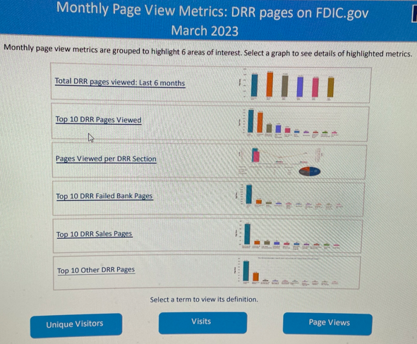
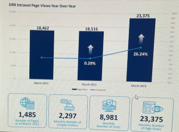
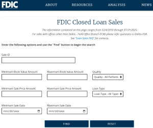
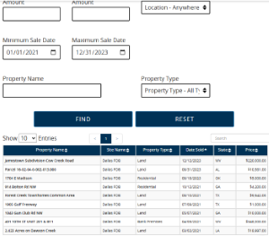

Web Traffic Reports, Sales Data Analysis, and Dashboards
Data analyst with 10+ years of experience transforming complex datasets into meaningful insights, driving design, development, and content optimization.
Solely responsible for divisional reports and dashboards, partnering with stakeholders to ensure seamless data integration, resolve issues, and translate business needs into
technical solutions. Experienced in leading high-performing teams and delivering analytics that directly guided business strategy and decision-making.
Website Traffic Analysis


- Extracted, analyzed, and visualized traffic data using Adobe Analytics (Adobe Marketing Cloud) and Crystal Reports, tracking monthly search and usage trends. Published dashboards on the intranet for enterprise-wide access.
- Designed and developed interactive dashboards and ad hoc analyses in Tableau, Adobe Analytics, Excel, and Crystal Reports to monitor KPIs and business performance.
- Crafted monthly web traffic and sales reports, including specialized Failed Bank reports to monitor navigation patterns and user engagement immediately after bank closures.
- Leveraged user behavior data to identify trends, recommend redesigns, and optimize navigation, resulting in improved user experience and sales performance.
- Presented findings to clients and published interactive dashboards online, providing accessible, data-driven insights.


Sales Data Analysis
- Produced monthly Closed Loan Sales and Real Estate Sales reports, as well as annual summaries, published to a web interface on FDIC.gov website.
- Delivered timely ad hoc reports tailored to client requests, ensuring data-driven decision-making.
- Designed customized sales dashboards to track KPIs, visualize performance trends, and communicate insights in clear, compelling formats.
- Translated raw sales data into actionable strategies, aligning reporting with business goals and stakeholder needs.
Failed Bank web traffic reports
- Generated specialized reports analyzing page activity, bounce rates, navigation patterns, and user engagement immediately following bank closures.
- Delivered monthly traffic reports evaluating failed bank website performance; findings were published to the intranet reporting site for leadership review.
- Provided actionable insights that guided content strategy, communication planning, and navigation improvements during high-visibility bank closures.